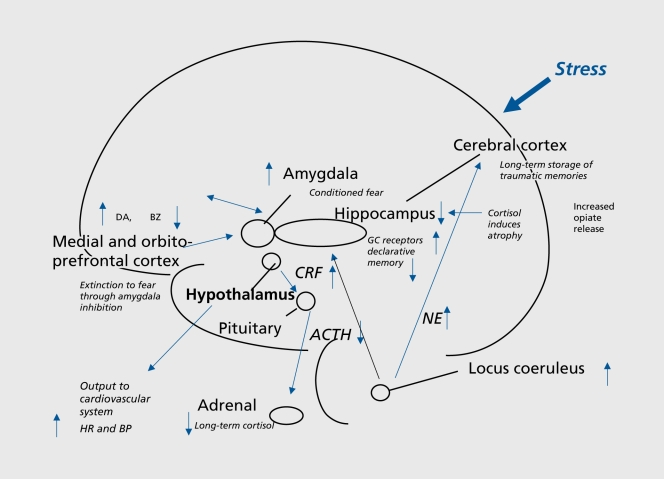

What is it?
PTSD is a condition caused by witnessing or experiencing a traumatic event. Patients experience flashbacks, nightmares,severe anxiety, and uncontrolled thoughts which lost from months to years. They often avoid places or thoughts that cause that remind them of the event and isolate themselves.
The American Pschyatrict associations defines PTSD as "a traumatic event that involves actual or threatened death or serious injury or a threat to the physical integrity of oneself or others."
The Science Behind stress and PTSD
Traumatic stress is known to increase cortisol levels, increase norepinephrine responses, shrink the hippocampus, and increase amygdala functions.
The Hippocampus, amygdala, and medial prefrontal cortex also gave with the chemicals Cortisol and norepinephrine both play a role in stress response. Cortisol has a number of important purposes in stress response, one of them being that it mediates fear-related behaviors and triggers other neurochemical responses in the brain. Cortisol is released by the Corticotropin- releasing factor in the hypothalamus after stimulation of the ACTH release from the pituitary.
Studies have shown that early on stress damages this process. In the study rats who were separated from their mother had decreased numbers of cortisol receptors in their hippocampus and frontal cortex. Stressed animals experienced the same thing. Cortisol was unable to bind to receptors in the hippocampus.
Studies in humans also showed that the type of trauma experienced can contribute to whether a person has increased cortisol or if the reception is blocked in some way. For example, a study in adult women who experienced childhood abuse and PTSD showed that they decreased cortisol over a 24 hour assessment, but excess cortisol when presented with traumatic stressors.
Evolutionary Context

If stress and PTSD are so bad then why do we experience them. The Stress response evolved as a result of threats. Stress is meant to help us survive an unexpected threat. When the stress hormones are released our blood pressure rises, energy is used in different areas, and systems not essential in that moment are slowed down. Our Memory also becomes sharper and we think more clearly. All of these things are meant to help us survive a real physical threat. However, This response is needed as much in modern society, but can still be triggered by non-life threatening stressors.
This stress reaction eveolved to give organisms a better of survival chance. For example if an organism had a mutation that made their stress response faster or more effective they would have a better survival chance and be able to pass that mutation onto their offspring. On the other hand someone who had a mutation where the stress response was not activating most likely woulndt be fit enough to survive and might die to predators.
Epigenetics
A group of scientists tested a theory to see whether trauma can be passed down from a parent to an offspring. They discovered that there were changes in the Epigenome which caused epigenetic changes in people. A Different scientist examined rats and discovered that once a gene was turned off by rna it wouldn’t appear for over 80 generations. They also found that mice who were malnourished had descents who became overweight easily. They also tested it with stress and found that pups who were taken away from their mother gave birth to pups who had behavioral changes. Researchers think that stress might affect lncRNA, since the traumatised mice’s pups had higher levels of it.
Social Justice
PTSD is a terrible illness that can cause people to isolate themselves or take any measures possible to avoid thoughts or memories of their previous trauma. THis means that a person might have difficulty participating in society and being able to care for themselves. PTSD did not become an officially recognized illness until 1980. Previously it had been recognized as “shell shock” or just simply written off as war trauma. Because of this treatment methods were ineffective and sometimes damaging. PTSD is often seen in Veterans coming back from war. It was forst seen in large numbers among Veternas coming home from WW one, and later seen among survivors of the holocaust, WW Two, and Vietnam war. Today it is seen among soldiers coming home from the middle east as well as child soldiers being forced to fight. Even though PTSD is most frequently seen in veterans it can be diagnosed in anyone who has experienced a traumatic event. It is important to raise awareness into more research into how to manage the illness because of how detrimental it can be to a person's daily functioning. Especially for people who don't have access to healthcare or dont have the privilege of being able to get a diagnosis and receive treatment.
Action plan
As members of the Saint Ignatius Community it's important for us to remember the 5 Grad at Grad values. First, We should be loving and caring towards people struggling with this illness especially if they can't afford to seek treatment. Giving people support is a healthy way to allow them to cope especially with PTSD where people may seek out ways to distract themselves from difficult memories, it's always helpful to have a good support system. Secondly, We should be committed to doing justice. A great way to help support people who suffer from this condition is to spread awareness and donate to charities who help victims and fund research.
A great example is The Borgen Project in Yemen which helps rehabilitate child soldiers and teach them about PTSD in hopes that they can recognize the signs and seek help or help each other. There are also orangizations in the US that help veterans find support and provide training to allow others to help.